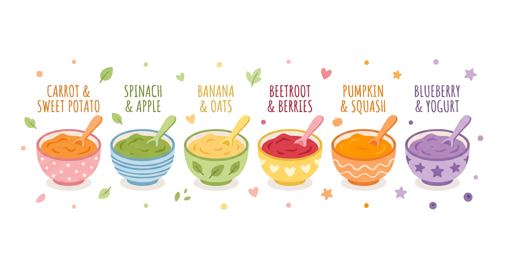
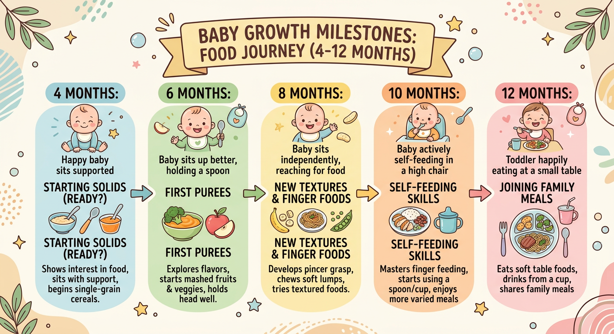

# 🍼 新生兒副食品入門 ### 從零開始，讓寶寶愛上吃飯 *建議開始時間・常見食材・注意事項*
## 什麼是副食品？ - 母乳或配方奶以外的**固體／半固體食物** - 幫助寶寶補充奶水無法提供的營養 - 訓練寶寶的**咀嚼、吞嚥能力** - 培養多元口味的飲食習慣 <p></p>
## ⏰ 何時開始添加？ ### 建議：滿 **4–6 個月** **準備好的信號：** - 頭頸能直立穩定 - 對大人吃東西感興趣 - 舌頭推擠反射消失 - 體重約達出生時的 **2 倍** > 🏥 建議先諮詢兒科醫師確認
## 🥣 第一口吃什麼？ | 階段 | 月齡 | 建議食材 | |------|------|----------| | 初期 | 4–6 月 | 米糊、南瓜泥、地瓜泥 | | 中期 | 7–9 月 | 粥、蔬菜泥、雞肉泥 | | 後期 | 10–12 月 | 軟飯、切小塊食物 |
## 👨🍳 製作原則 - **一次只引入一種新食材**（觀察 3–5 天） - 質地由**細滑 → 粗糙**循序漸進 - 不加鹽、糖、調味料（1 歲前） - 食材**蒸熟或煮熟**，打成泥或壓碎 - 保持食物原味，培養天然口感
## 🥦 常見食材清單 **穀物類**：米糊、燕麥、麵條 **蔬菜類**：南瓜、地瓜、紅蘿蔔、菠菜、花椰菜 **水果類**：香蕉、蘋果、梨子、酪梨 **蛋白質**：雞肉、豆腐、蛋黃（6 月後） **乳製品**：起司、優格（8 月後）
## ⚠️ 過敏食材注意 **常見過敏原（需謹慎引入）：** - 🥚 雞蛋（蛋白建議 1 歲後） - 🥜 花生 / 堅果類 - 🌾 麩質（麥類） - 🍤 蝦、蟹等甲殼類 - 🐄 牛奶蛋白 **引入後觀察：**皮疹、嘔吐、腹瀉、呼吸異常 → 立即就醫！
## 🍴 餵食技巧 - 選擇寶寶**清醒、心情好**的時候 - 從**小湯匙**開始，每次 1–2 匙 - 讓寶寶決定吃多少，**不強迫** - 吃飯時間控制在 **20–30 分鐘** - 讓寶寶**自己嘗試抓食**（BLW 概念）
## ❓ 常見 Q&A **Q：寶寶不吃怎麼辦？** A：多嘗試幾次，口味接受需要時間（10–15 次） **Q：副食品會影響喝奶量嗎？** A：初期以奶為主，副食品為輔；1 歲後才反轉 **Q：需要補充營養品嗎？** A：4 個月起補充維生素 D；依醫師建議補鐵 **Q：可以用果汁代替水果嗎？** A：不建議，應給完整水果泥保留纖維
## 📅 副食品里程碑 ``` 4–6 月 ▶ 開始嘗試米糊、蔬菜泥 6–7 月 ▶ 引入蛋黃、豆腐、雞肉 8–9 月 ▶ 嘗試手指食物、軟飯 10–12 月 ▶ 與家人同桌，食物多樣化 12 月+ ▶ 過渡至家庭食物（低鹽低糖） ``` <p></p>
# 🎉 開心吃，健康長大！ ### 每個寶寶的步調都不同 ### 耐心陪伴，慢慢來 💪 --- *有任何問題請諮詢您的兒科醫師*